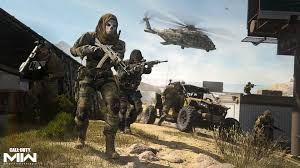
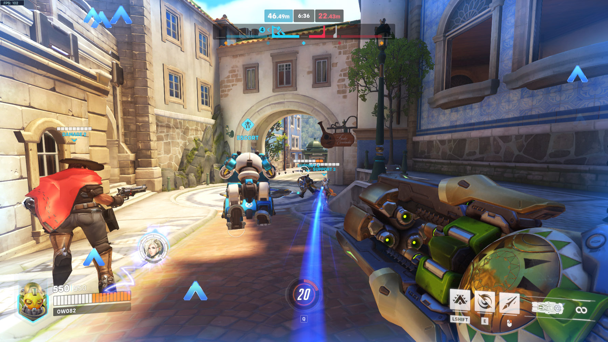

FPS Games
Call of Duty: Modern Warfare II
Review
The Call of Duty formula returns, this time shinier than ever. Modern Warfare II delivers smooth gunplay and Hollywood action sequences, but let’s be honest — it's a glorified rehash. Multiplayer? Addictive. Campaign? Flashy but forgettable. If you’ve played one, you’ve played them all... but you’ll still sink 50 hours in and love every killstreak.
Under the hood, it's a premium gunplay simulator with corporate skin. The weapon animations and feel are top-tier, but convoluted unlock systems and the monetization model steal the soul from what could have been a classic. You pay $70 and still feel like a visitor in a free-to-play economy. It’s a feast for the senses, but a fast-food meal at heart.
Rating
7.5/10
Overwatch 2
Review
It’s like Overwatch 1, but with a shiny coat of paint, fewer players, and more corporate baggage. Don’t get us wrong — it still has amazing hero design and satisfying team fights. But don’t call it a sequel. It’s Overwatch 1.5 with a battle pass. Fun? Yes. Revolutionary? Not even close.
Behind the polished visuals and tight mechanics lies a game trying to sell you nostalgia with a subscription model. Heroes are creative, maps are solid, but Blizzard’s decision to axe PvE and lean into battle passes left a bitter taste. A decent shooter trapped in a monetization strategy.
Rating
7/10